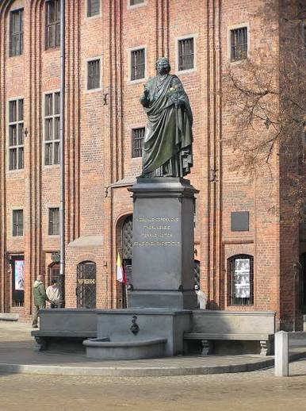
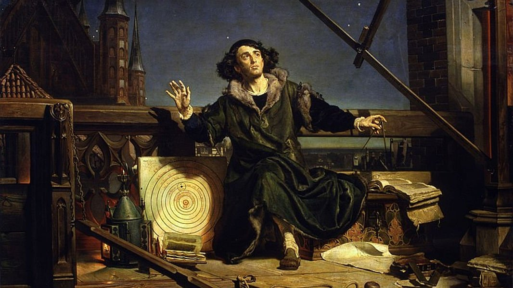

Dzieciństwo i młodość

Mikołaj Kopernik urodził się w 1473 roku w Toruniu. Pochodził z rodziny mieszczańskiej. W młodości rozpoczął naukę, która później pozwoliła mu rozwijać zainteresowania astronomią i matematyką.
Studia
Kopernik studiował między innymi na Uniwersytecie Jagiellońskim w Krakowie. Później kształcił się także we Włoszech, gdzie studiował prawo i medycynę oraz rozwijał swoje zainteresowania astronomią.
Praca i zainteresowania

Oprócz astronomii Kopernik zajmował się również matematyką, medycyną i sprawami gospodarczymi. Największą sławę przyniosły mu jednak badania dotyczące ruchu planet.